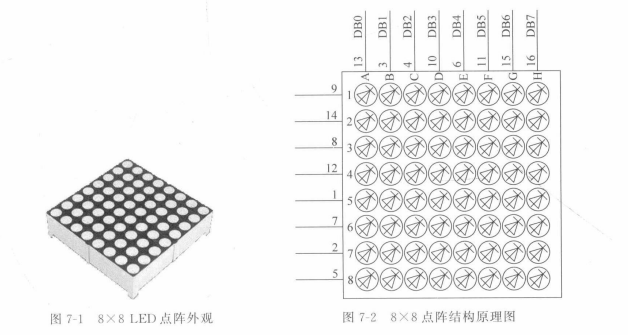
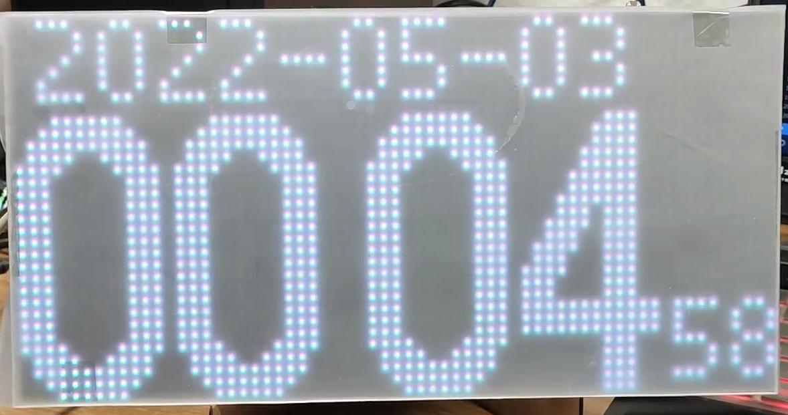

各类屏幕介绍
点阵屏
点阵屏(Dot matrix screen)指在显示屏上长和宽各能显示出多少个像素点。 从技术角度来说，所有屏幕都是以像素矩阵的形式显示，都是点阵屏，但在日常语言中，人们通常会将"点阵屏"这个术语更多地用于指代传统的液晶点阵屏或LED点阵屏，而将其他类型的屏幕根据其特定技术特征进行分类和命名。就好比485明明是物理层的通讯协议，没有规定帧的格式，但是市面上有很多运行于数据链路层的私有485协议，实际上它们不是485协议，只是基于485协议的私有数据链路层协议，但大家都称呼它为私有485协议。 下面是一些点阵屏：



段码(笔段式)屏
段码屏（Segment Display）通常被认为是一种特殊类型的点阵屏(你也可以认为不是)。点阵屏是一种将图像或文本信息分割成像素矩阵的显示设备，而段码屏是其中的一种变体。
段码屏通常由七段显示器或十六段显示器组成，每个段（或几个段）对应一个特定的字符或数字。每个段可以通过控制电压或电流来点亮或熄灭，从而显示出不同的字符或数字。段码屏在数字显示和字符显示方面非常常见，例如用于显示数字时钟、计数器、温度显示等。

LED屏(Light-Emitting Diode Display)
Light-Emitting Diode翻译为发光二极管，由它的名字就可以看出，LED屏是通过使用发光二极管（LED）作为像素点来显示图像的显示屏。
下面是一些LED屏

LCD(Liquid Crystal Display)
Liquid Crystal Display翻译为液晶显示屏，LCD是一种使用液晶材料来控制光的透过程度来显示图像和字符的技术。
LCD屏幕可以分为图形型和字符型，它们在显示内容和使用方式上有一些区别：
图形型LCD屏幕：图形型LCD屏幕通常具有较高的分辨率和灵活性，可以显示更复杂的图形和图像。它们可以通过像素级别的控制来显示任意的图形和图像，可以绘制线条、曲线、点阵图像等。图形型LCD屏幕通常用于需要显示较复杂图形的应用场景，如图形用户界面（GUI）显示、图表绘制等。
字符型LCD屏幕：字符型LCD屏幕由一组预定义的字符组成，每个字符由一个固定大小的点阵矩阵表示。字符型LCD屏幕可以显示有限数量的字符，通常用于显示文本信息，如字母、数字、符号等。它们通常具有较低的分辨率，但可以显示大量的字符，并且能够提供简单的文本显示功能。 字符型LCD用于显示字符，每个字符像素矩阵间都有预留的间隔，强行用来显示图片就会出现下图所示画面。
区别总结如下：
- 图形型LCD屏幕具有较高的分辨率和灵活性，可以显示复杂的图形和图像。
- 字符型LCD屏幕由预定义的字符组成，每个字符具有固定的点阵表示，用于显示有限数量的字符和文本信息。
OLED屏 (Organic Light-Emitting Diode)
Organic Light-Emitting Diode意为有机发光二极管。OLED是一种利用有机化合物作为发光材料的显示技术，它能够直接发光而无需背光源。
TFT(Thin Film Transistor)
Thin Film Transistor意为薄膜晶体管。TFT是一种液晶显示屏的技术，其中每个液晶像素点都与一个薄膜晶体管相连，通过控制晶体管的电流来控制像素的亮度和颜色。
SSD1306
MCU接口
SSD1306总共有8个数据引脚和5个控制引脚，不同的MCU模块可以通过BS[2:0]引脚选择设置
如下图所示，它就使用的是IIC接口，从它BS0-2的接线情况可以看出。而出于节省IO引脚的需要，其余引脚也是参照上表配置的。
MCU I2C接口
1 | I2C通讯接口由从机地址为SA0(D/C#引脚作为SA0), I2C总线数据信号(SDAout/D2输出和SDAin/D1输入)和I2C |
- I2C通信的地址由7位从机地址加1位读写控制，即\(011110 + SA0+R/W\#\)位组成
- R/W位是I2C的读写选择(1读0写)，一般向OLED写数据居多，极少读，因此下图为了节省IO口，R/W#接地了。
- 而SSD1306中，SA0位为从机地址提供一位的扩展，0111100和0111101都可以作为从机地址，下图的D/C#引脚接地表示从机地址为0111100
- RES#为0会初始化设备。所以可以看出与上面的例子不同下图的例子出于某种需要RES#不再是接地。

命令表
SSD1306的部分常用命令如下所示 在SSD1306中，有的命令是单字节命令，有的是双字节命令。比如设置显示开关0xAE就是关闭OLED屏幕，是单字节命令。比如设置对比度(亮度)的命令就是双字节命令，可以认为0x81是一个命令头，只有先发送0x81，才允许发送对比度进行设置，否则命令无效，而从图中可以看出A[7:0]都是用于对比度设置，因此对比度取值为0x00-0xFF。
具体的命令参见数据手册，现就SSD1306的初始化命令为例，对其命令表进行介绍。
1 | //将OLED面板关闭(睡眠模式) |